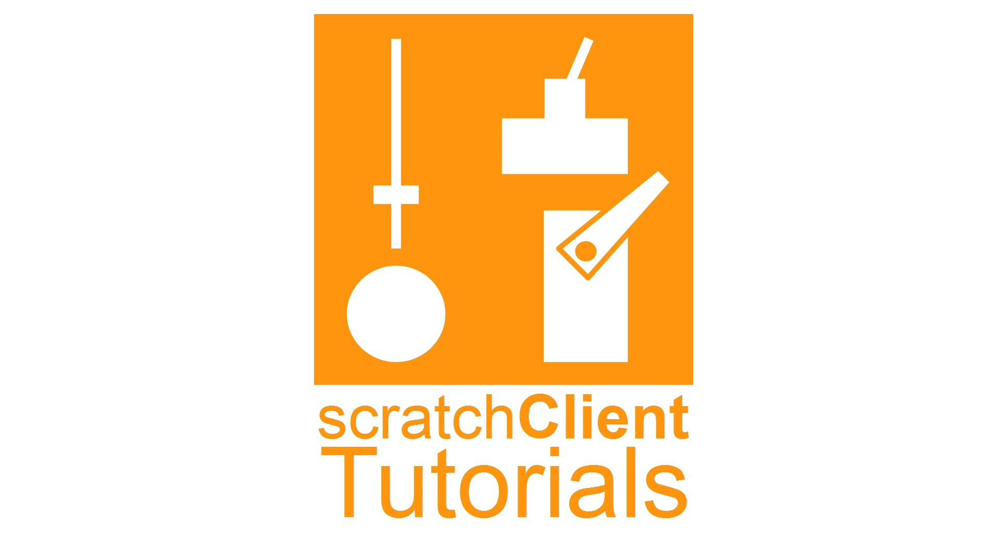
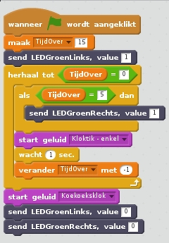
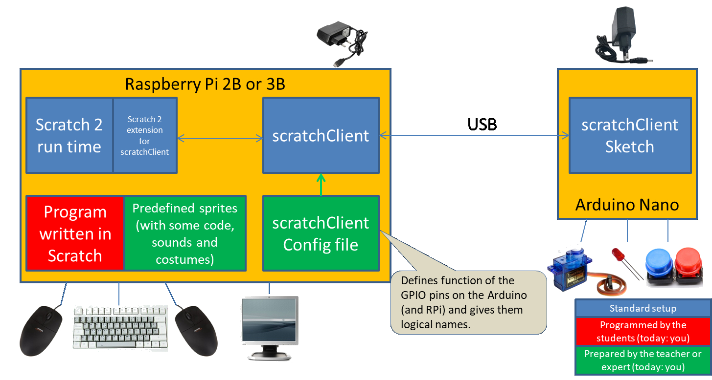

Main benefit: program in real world logical names

Benefits of scratchClient
- Children can program in Scratch using real world logical names rather than technical terms
- Interface with the GPIO pins on Raspberry Pi
- Interface with the GPIO pins on a USB connected Arduino
- Interface with
- SPI and I2C connected peripherals
- MQTT
- Sonic Pi
- Sensehat
- Text to Speech
- Many more

Benefits of using Arduino
Why using an Arduino when Raspberry Pi also has GPIO pins? Here are the benefits:
- Arduino has analog in
- Arduino has HW pulse width modulation (PWM)
- Arduino GPIO pins are 5 volt tolerant
- Easier to make connections (+, - and signal next to each other)
- When misconnecting, blowing up an Arduino clone of 2 euro is less of an issue than a RPi of 40 euro

The Setup

Getting started / getting more information
Now that you got the overview, are you interested to take the next steps?